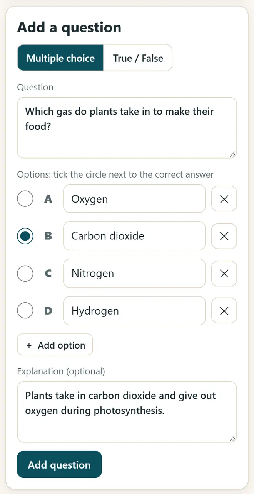
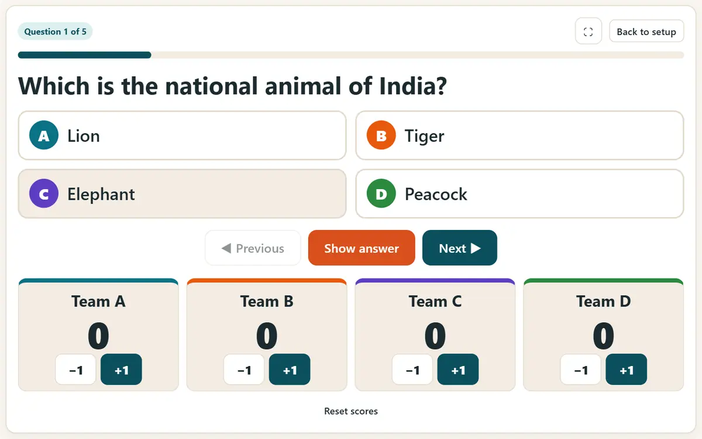

உங்கள் வகுப்புக்கு ஆன்லைன் வினாடி வினா உருவாக்குவது எப்படி (இலவசம்)
ஒரு வினாடி வினா, மூன்று பயன்பாடுகள்: புரொஜெக்டரில் அணிப் போட்டி, மாணவர்களின் போனில் நேரடி வினாடி வினா, வீட்டுப்பாடத்துக்குப் பயிற்சி இணைப்பு. எந்த மாணவருக்கும் கணக்கோ மின்னஞ்சலோ தேவையில்லை.
சுருக்கமான பதில்
வினாடி வினா: உருவாக்கு & விளையாடு திறந்து, கேள்விகளைத் தட்டச்சு செய்து (அல்லது Excel-இலிருந்து CSV கோப்பை இறக்குமதி செய்து), விளையாடும் முறையைத் தேர்ந்தெடுங்கள்: புரொஜெக்டரில் அணிகளுக்கு “வகுப்பு வினா”, WhatsApp பயிற்சி இணைப்புக்கு “பகிர் & அச்சிடு”, அல்லது வினாடி வினாவை நேரலை வகுப்பு வினாடி வினா-இல் இறக்குமதி செய்யுங்கள்; அங்கே மாணவர்கள் apnipathshala.ai/join-இல் 6 இலக்கக் குறியீடும் ஒரு புனைபெயரும் உள்ளிட்டுச் சேருவார்கள்.
6 படிகளில் வினாடி வினா உருவாக்கி நடத்துங்கள்
-
புதிய வினாடி வினாவைத் தொடங்குங்கள்
வினாடி வினா: உருவாக்கு & விளையாடு திறந்து “புதிய வினாடி வினா” அழுத்துங்கள். அதற்கு ஒரு பெயர் கொடுங்கள், உதாரணமாக “8ஆம் வகுப்பு அறிவியல்: ஒளி”. முதலில் முயற்சிக்க ஒரு மாதிரி வினாடி வினா ஏற்கெனவே உள்ளது.
-
கேள்விகளைச் சேருங்கள்
“பல தேர்வு” அல்லது “சரி / தவறு” தேர்ந்தெடுத்து, கேள்வியையும் விருப்பங்களையும் தட்டச்சு செய்து, சரியான பதிலைக் குறியிட்டு, ஒரு வரி விளக்கம் சேருங்கள். “கேள்வியைச் சேர்” அழுத்துங்கள். கேள்விகள் ஏற்கெனவே Excel-இல் உள்ளனவா? question, option1 … option6, correct, explanation நெடுவரிசைகளுடன் CSV ஆகச் சேமித்து இறக்குமதி செய்யுங்கள்.

வினாடி வினா உருவாக்கி: கேள்வி எழுதி, சரியான பதிலைக் குறியிட்டு, விளக்கம் சேருங்கள். -
வகுப்பில் அணிகளாக விளையாடுங்கள்
புரொஜெக்டரில் “வகுப்பு வினா” தாவலைத் திறங்கள். வகுப்பை A–D அணிகளாகப் பிரித்து, ஒரு நேரத்தில் ஒரு கேள்வியைக் காட்டி, டைமர் முடியும் வரை அணிகளை விவாதிக்க விடுங்கள்; பிறகு பதிலைக் காட்டிச் சரியான அணிகளுக்கு ஒவ்வொரு புள்ளி கொடுங்கள்.

புரொஜெக்டரில் அணி மதிப்பெண்களுடன் வகுப்பு வினாடி வினா. -
WhatsApp-இல் பயிற்சி இணைப்பை அனுப்புங்கள்
“பகிர் & அச்சிடு”-இல் வினாடி வினா இணைப்பை நகலெடுத்து வகுப்புக் குழுவுக்கு அனுப்புங்கள். முழு வினாடி வினாவும் இணைப்புக்குள்ளேயே இருப்பதால் எந்த உள்நுழைவும் இல்லாமல் இயங்கும். கேள்விகளை அச்சிடவும் முடியும்; விடைகள் தனிப் பக்கத்தில் வரும்.
-
மாணவர்களின் போனில் நேரடி வினாடி வினா நடத்துங்கள்
Kahoot போன்ற நேரடி வினாடி வினாவுக்கு நேரலை வகுப்பு வினாடி வினா திறந்து Google மூலம் உள்நுழையுங்கள் (ஆசிரியர் மட்டுமே உள்நுழைவார்). உங்கள் வினாடி வினாவை இறக்குமதி செய்து “நேரலையாக நடத்து” அழுத்துங்கள். மாணவர்கள் apnipathshala.ai/join திறந்து 6 இலக்கக் குறியீடும் புனைபெயரும் உள்ளிட்டு, போனில் பதில் அளிப்பார்கள்.
-
முடிவுகளைப் பாருங்கள்
சரியான பதிலுக்கு 500 முதல் 1000 புள்ளிகள்: எவ்வளவு வேகமோ அவ்வளவு அதிகம். ஒவ்வொரு கேள்விக்குப் பிறகும் தரவரிசைப் பலகை தெரியும்; முடிவுகளை CSV கோப்பாகப் பதிவிறக்கலாம். முடிவுகள் 30 நாட்களுக்குப் பின் நீக்கப்படும்.
நல்ல வகுப்பு வினாடி வினாவுக்கான குறிப்புகள்
- ஒரு பாடவேளைக்கு 10 முதல் 15 கேள்விகள் வைத்து, ஒவ்வொரு கேள்வியிலும் ஒரே கருத்தைக் கேளுங்கள்.
- ஒவ்வொரு பதிலுக்கும் சிறு விளக்கம் எழுதுங்கள்: தவறு செய்த உடனேயே மாணவர்கள் அதிகம் கற்கிறார்கள்.
- நேரடி வினாடி வினாவில் முழுப் பெயர் அல்ல, புனைபெயர் உள்ளிடச் சொல்லுங்கள்.
- வகுப்பில் போன் இல்லையா? புரொஜெக்டரில் வகுப்பு வினாடி வினா விளையாடுங்கள், அல்லது பணித்தாளை அச்சிடுங்கள்.
புதிய இலவசக் கருவிகளும் இந்தியில் AI பாடங்களும் பெறுங்கள்
எங்கள் மின்னஞ்சல் பட்டியலில் சேருங்கள்: புதிய இலவசச் செயலிகள், புதிய வழிகாட்டிகள், AI பற்றிய இந்தி வீடியோ பாடங்கள் பற்றிய தகவல் உங்களுக்கு வரும். ஸ்பேம் இல்லை.
பெரியவர்களுக்கு (18+) மட்டும். எப்போது வேண்டுமானாலும் விலகலாம்.
இந்தக் கருவிகளை ஏன் பரிந்துரைக்கிறோம்
- அனைவருக்கும் இலவசம்: விளம்பரம் இல்லை, பதிவு இல்லை, கட்டணத் திட்டம் இல்லை.
- தனிப்பட்டது: உங்கள் கோப்புகளும் விவரங்களும் உங்கள் சொந்தச் சாதனத்திலேயே இருக்கும்.
- போன், லேப்டாப் அல்லது ஸ்மார்ட்போர்டில் இயங்கும், ஒருமுறை திறந்த பின் இணையம் இல்லாமலும்.
- தமிழ், இந்தி உட்பட 12 மொழிகளில்.
வீடியோவில் கற்க விருப்பமா? எங்கள் YouTube சேனலில் AI மற்றும் இலவசக் கருவிகள் பற்றிய இந்திப் பாடங்களைப் பாருங்கள்.
அடிக்கடி கேட்கப்படும் கேள்விகள்
மாணவர்கள் பதிவு செய்ய வேண்டுமா?
இல்லை. பயிற்சி இணைப்புக்கும் வகுப்பு வினாடி வினாவுக்கும் எந்தக் கணக்கும் தேவையில்லை. நேரடி வினாடி வினாவில் மாணவர்கள் குறியீடும் புனைபெயரும் மட்டுமே உள்ளிடுவார்கள்; அவர்களின் பதில்கள் 30 நாட்களுக்குப் பின் நீக்கப்படும்.
இது Kahoot அல்லது Quizizz-க்கு இலவச மாற்றா?
வகுப்பின் பெரும்பாலான தேவைகளுக்கு, ஆம்: MCQ மற்றும் சரி/தவறு கேள்விகள், நேரடித் தரவரிசை, அணி விளையாட்டு, CSV-இல் முடிவுகள், அனைத்தும் இலவசமாகவும் விளம்பரமின்றியும். இது கட்டணக் கருவிகளை விட எளிது, 12 மொழிகளில் இயங்கும்.
தமிழில் வினாடி வினா உருவாக்க முடியுமா?
ஆம். கேள்விகளைத் தமிழிலோ எந்த இந்திய மொழியிலோ தட்டச்சு செய்யுங்கள். செயலியின் பொத்தான்களும் பட்டியல்களும் 12 மொழிகளில் உள்ளன.
பயிற்சி இணைப்பு இணையம் இல்லாமல் இயங்குமா?
முதல்முறை செயலியைத் திறக்க இணையம் வேண்டும். அதன் பிறகு அது ஆஃப்லைனில் இயங்கும், ஏனெனில் வினாடி வினா போனிலேயே இணைப்பிலிருந்து படிக்கப்படுகிறது.
வினாடி வினாவைப் பணித்தாளாக அச்சிட முடியுமா?
ஆம். “பகிர் & அச்சிடு”-இல் வினாத்தாளை அச்சிடுங்கள். விடைகள் தனிப் பக்கத்தில் அச்சாகும், அதை நீங்கள் வைத்துக்கொள்ளலாம்.
பயனுள்ளதாக இருந்ததா?
ஒரு நண்பருக்கோ, சக ஊழியர்களுக்கோ, உங்கள் பள்ளியின் WhatsApp குழுவுக்கோ அனுப்புங்கள்.